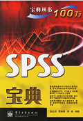
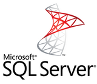
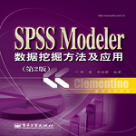

SPSS
 - - - 操作简单，功能强大的统计分析软件简 介：
SPSS(Statistical Product and Service Solutions)，"统计产品与服务解决方案"软件。世界上许多有影响的报刊杂志纷纷就SPSS的自动统计绘图、数据的深入分析、使用方便、功能齐全等方面给予了高度的评价。
下载学习资源 >>>Excel
- - - 并不是想驾驭就能驾驭得了的简 介：
Excel 是微软办公套装软件的一个重要的组成部分，它可以进行各种数据的处理、统计分析和辅助决策操作，广泛地应用于管理、统计财经、金融等众多领域。Excel 的一般用途包括：会计专用、预算、帐单和销售、报表、计划跟踪 、使用日历等
下载学习资源 >>>R语言
- - - 自由、免费、开源的软件简 介：
R是用于统计分析、绘图的语言和操作环境。R是属于GNU系统的一个自由、免费、源代码开放的软件，它是一个用于统计计算和统计制图的优秀工具。
下载学习资源 >>>Matlab
- - - 高大上的矩阵实验室简 介：
MATLAB是美国MathWorks公司出品的商业数学软件，用于算法开发、数据可视化、数据分析以及数值计算的高级技术计算语言和交互式环境，主要包括MATLAB和Simulink两大部分。MATLAB应用非常之广泛！
下载学习资源 >>>SQL
 - - - 访问和处理数据库的计算机语言简 介：
Structured Query Language结构化查询语言，简称SQL，是一种特殊目的的编程语言，是一种数据库查询和程序设计语言，用于存取数据以及查询、更新和管理关系数据库系统；同时也是数据库脚本文件的扩展名。
下载学习资源 >>>Modeler
 - - - 一个业界领先的数据挖掘平台简 介：
SPSS Modeler拥有直观的操作界面、自动化的数据准备和成熟的预测分析模型。便于数据挖掘工作者进行数据探索和模型的优化。同时，还具有了数据源连接、数据处理、建模分析等功能。
下载学习资源 >>>